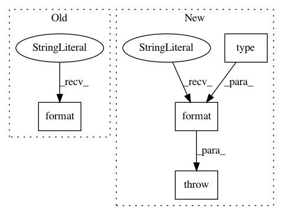

443ad869cbd8c174ee75833eae0c0b1c12b1f602,nussl/__init__.py,ImportErrorClass,__init__,#ImportErrorClass#,20
Before Change
class ImportErrorClass(object):
def __init__(self, lib):
raise ImportError("Cannot import {} because {} is not installed".format(self.__name__, lib))
from .core.constants import *
from .core.audio_signal import AudioSignal
After Change
class ImportErrorClass(object):
def __init__(self, lib):
msg = "Cannot import {} because {} is not installed".format(type(self).__name__, lib)
raise ImportError(msg)
from .core.constants import *
from .core.audio_signal import AudioSignal
from .core import utils, stft_utils, datasets
In pattern: SUPERPATTERN
Frequency: 3
Non-data size: 4
Instances
Project Name: interactiveaudiolab/nussl
Commit Name: 443ad869cbd8c174ee75833eae0c0b1c12b1f602
Time: 2018-04-01
Author: ethanmanilow@gmail.com
File Name: nussl/__init__.py
Class Name: ImportErrorClass
Method Name: __init__
Project Name: lingpy/lingpy
Commit Name: 997f7e378ffd48fd23107037534ad12cc471cdb6
Time: 2013-10-25
Author: frank@pc08447.Germanistik-Kunst.Uni-Marburg.DE
File Name: lingpy/basic/_parser.py
Class Name: _QLCParser
Method Name: _init_first
Project Name: kkroening/ffmpeg-python
Commit Name: 19555472029f57ce2c9caabe757425d8201c0324
Time: 2017-07-06
Author: karlk@kralnet.us
File Name: ffmpeg/_view.py
Class Name:
Method Name: view